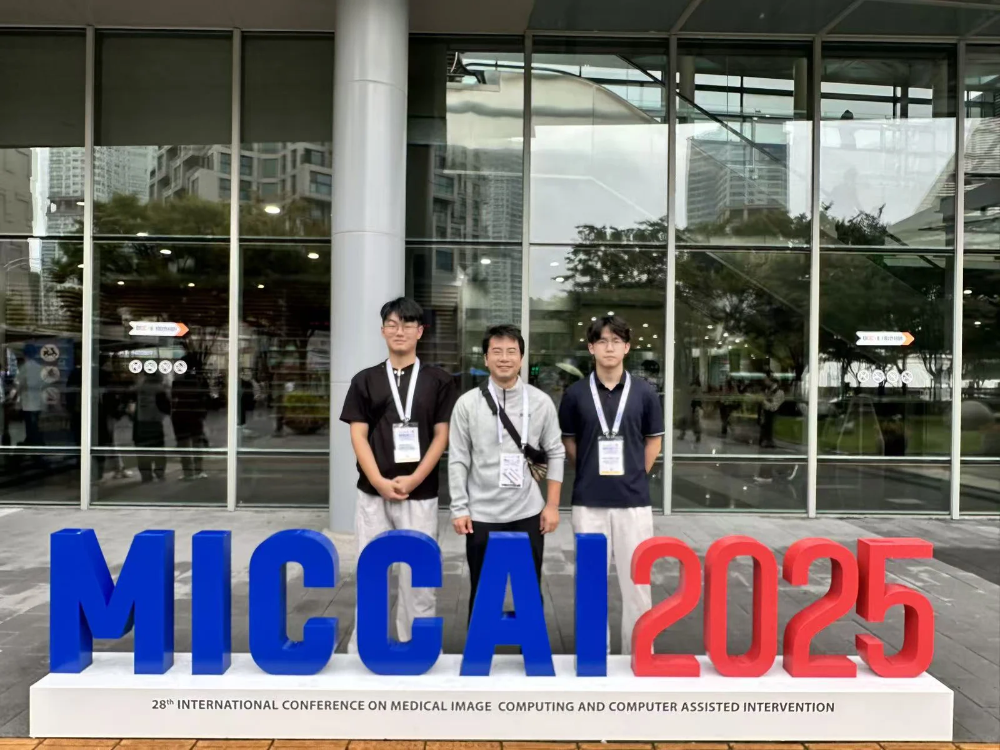
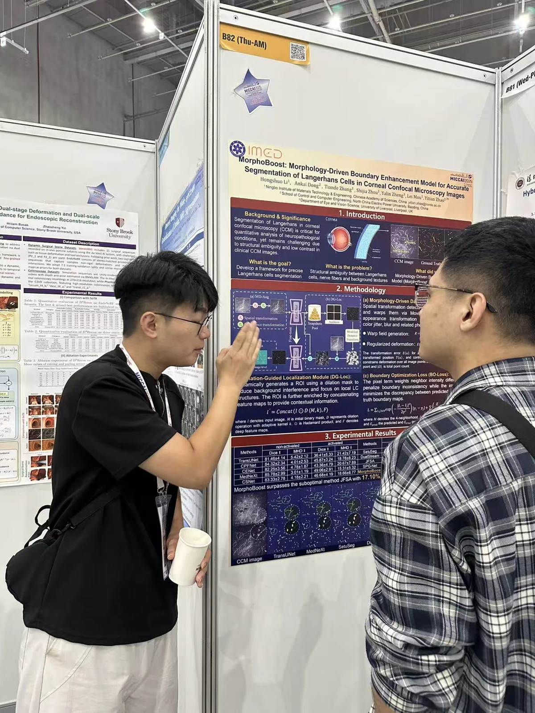
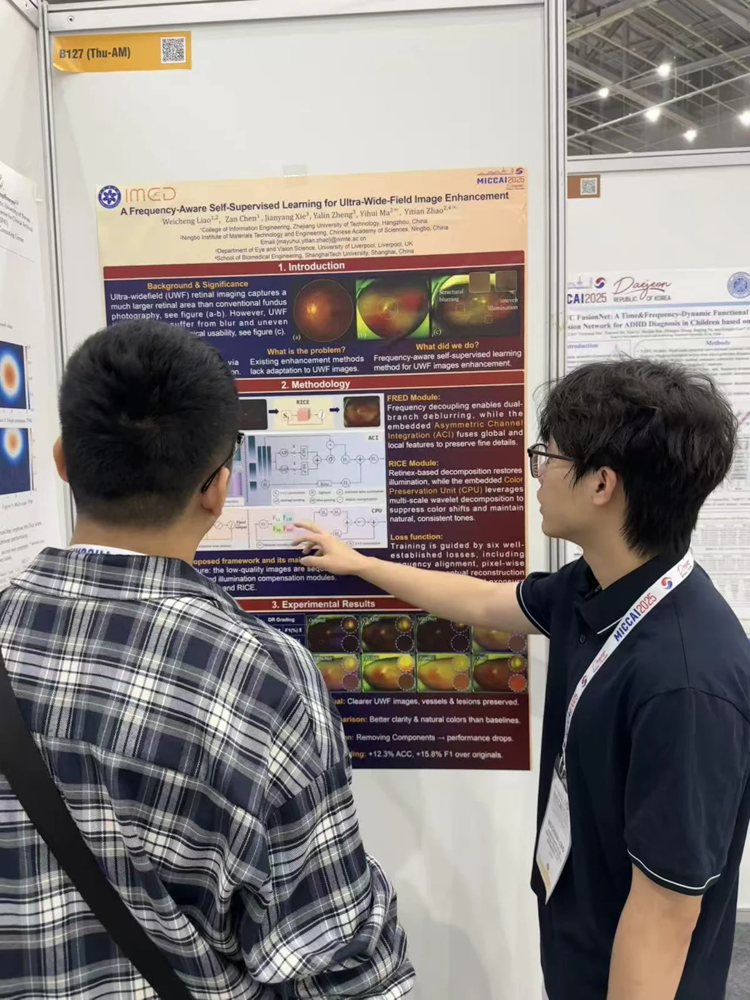
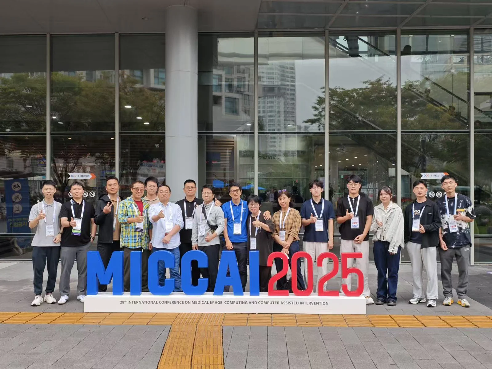
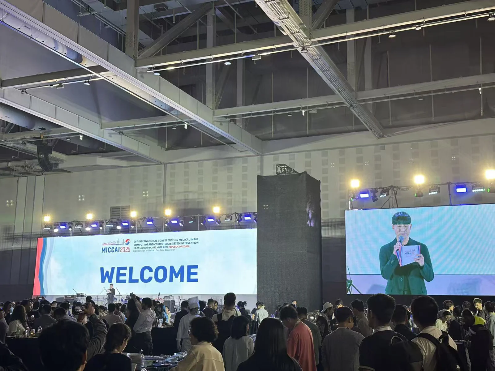
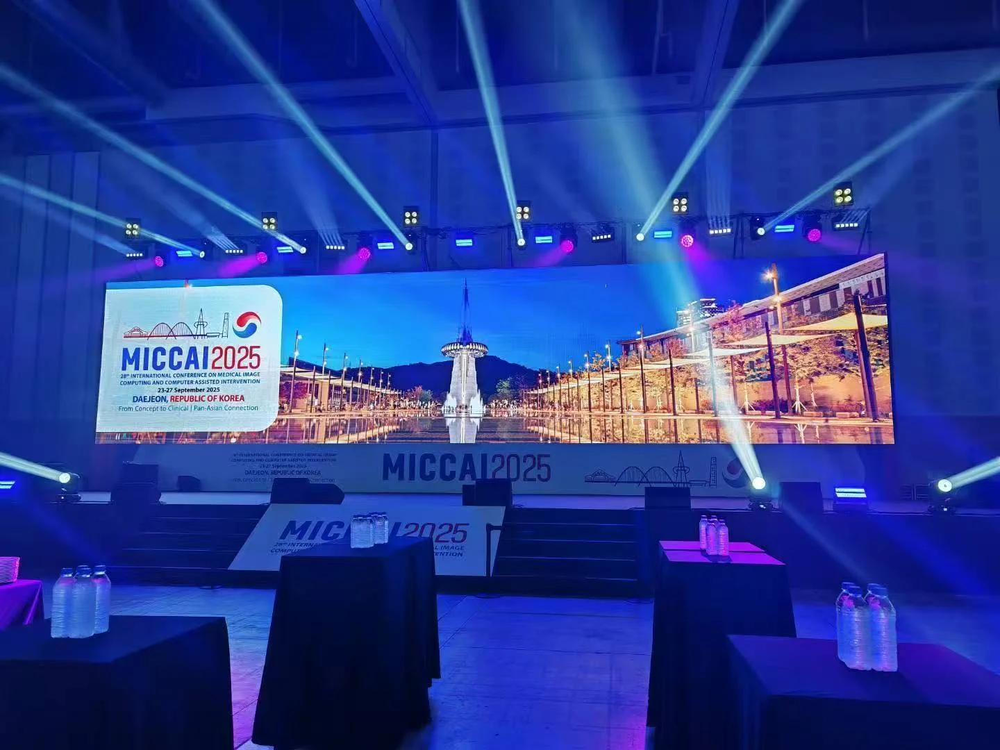

2025年9月23号，iMED团队由赵老师带队，前往韩国大田参加第28届国际医学图像计算与计算机辅助干预会议（MICCAI 2025）。本次会议汇聚了全球医学图像分析领域的顶尖学者与研究人员，是展示前沿研究成果、促进国际学术交流的重要平台，涵盖了主题报告、分会场研讨、海报展示、技术展览以及丰富多彩的社交活动等多个环节。会议主题聚焦于医学图像计算与计算机辅助干预领域的最新进展，包括但不限于图像分割、病灶识别、图像配准、三维重建、深度学习、机器学习等热点研究方向，为参会者呈现了一场学术盛宴。

在本次会议中，iMED团队学生廖炜城与李宏硕分别展示了各自的研究成果，并通过poster形式与国际同行进行深入交流。两位同学的研究内容聚焦于医学图像智能分析，展示了团队在图像增强、图像分割等方向上的最新进展。


会议期间，我们还与刘江老师、付华柱老师、许言午老师、程俊老师以及Risa Higashita老师等国内外知名学者进行了深入交流，并合影留念。此次交流不仅拓宽了学生们的学术视野，也为后续的国际合作奠定了良好基础。

MICCAI 2025的晚宴在会议中心举行，为参会者提供了一个放松身心、增进交流的绝佳平台。晚宴现场布置得温馨而典雅，灯光柔和、音乐悠扬，营造出一种轻松愉悦的氛围。
晚宴上，主办方精心安排了丰富多彩的表演节目，有韩国传统舞蹈、音乐演奏，韩国传统武术等。iMED团队成员们一边品尝着地道的美食，一边欣赏着精彩的表演，还与来自世界各地的参会者亲切交流，分享各自的研究经历和生活趣事。在轻松愉快的氛围中，大家增进了相互了解，建立了深厚的友谊。


此次韩国大田之行，iMED团队满载而归。团队成员们不仅在国际舞台上展示了研究成果，还与众多国际顶尖学者进行了深入的交流，拓宽了研究视野。同时，通过参加MICCAI晚宴等社交活动，团队成员们在紧张严肃的学术会议之余，放松了身心，领略了韩国的风土人情，收获了难忘的回忆和珍贵的友谊。
编辑：廖炜城